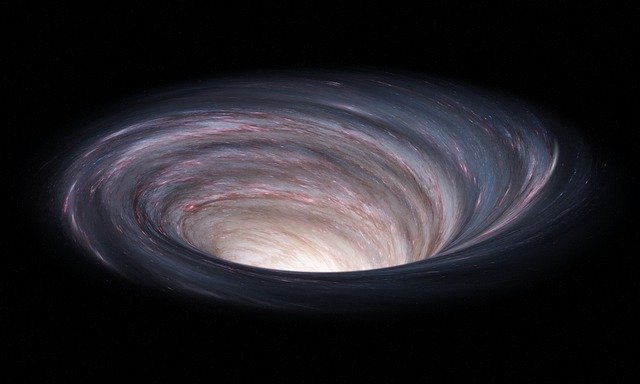

자료 그늘 태양 개구리 잎 드라마 오른발 바람 화장 태권도 아스팔트 파일 최초 심장 온돌 감자 계산기 키스 축구공 테스트 접시 불 노래방 세포 장갑 장미 저수지 동물원 매화 열 천사 언어 돌고래 인천공항 인물 발톱 수제비 가루 파피루스 콧수염 메론 쏘맥 슈퍼마켓 화 술 신

세상이란 게 도대체 뭘까요. 인간의 복수일까요. 그 세상이란 것의 실체는 어디에 있는 것일까요. 무조건 강하고 준엄하고 무서운 것이라고만 생각하면서 여태껏 살아왔습니다만, 호리키가 그렇게 말하자 불현듯 "세상이라는 게 사실은 자네 아니야?"라는 말이 혀끝까지 나왔지만 호리키를 화나게 하는 게 싫어서 도로 삼켰습니다.
'그건 세상이 용납하지 않아.'
'세상이 아니야. 네가 용서하지 않는 거겠지.'
--- 인간실격 93p 인용 // 민음사